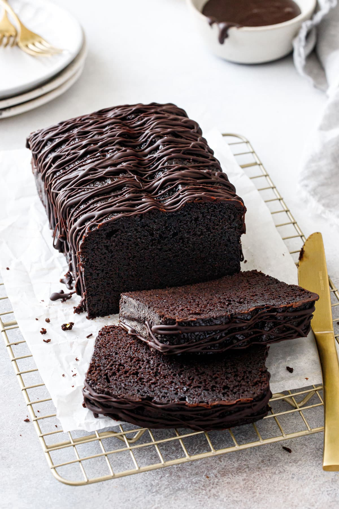

Home
Oil Chocolate Cake

Description
This memory envoking chocolate cake is made with vegetable oil for a perfectly moist bake.
It's so easy to make and comes together in just minutes, all in one bowl and there is no mixer required!
The addition of oil in this reciope gives the cake a longer pantry life, but due to it delicious taste it probably wont last that long enjoy!

Ingredients
-
Cake
- 6 oz Plain Flour
- 2 tbsp Coca Powder
- 1 tsp Baking Powder
- 1 tsp Bicarbonate of Soda
- 5 oz Caster Sugar
- 2 tbsp Treacle
- 2 Eggs
- 5 floz Vegetable
- 5 floz Milk
-
Butter Icing
- 5oz butter, softened
- 10oz icing sugar
- 1–2 tbsp milk
- ¼ tsp vanilla extract
Steps
- Preheat fan oven to 325°F/170°C.
- Lightly grease a large loaf tin. Line the base and sides with parchment paper. Lightly butter the parchment.
- Place all the ingredients in a large bowl and mix together for 2 minutesuntil blended.
- Pour the mix into the prelined loaf tin.
- Place in the oven and bake for 40/45minutes or until springy.
- Beat the butter in a large bowl until soft.
- Add half of the icing sugar and beat until smooth.
- Add the remaining icing sugar and one tablespoon of the milk and vanilla extract and beat the mixture until creamy and smooth.
- Beat in the remaining milk, if necessary, to loosen the mixture.
- Allow the cake to cool, then cut into two even pieces creating a top and bottom.
- Spread the butter cream on the bottom half of the cake and assemble.